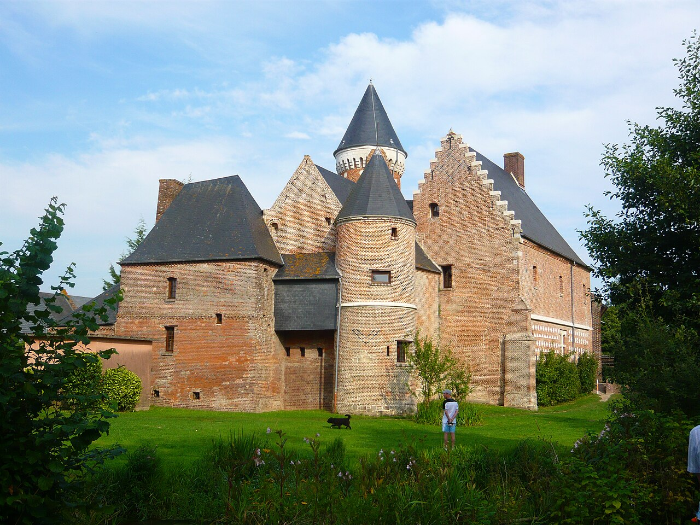

Musée du Verre de Blangy-sur-Bresle : soufflage, flacons et visite 2026
Dans cette fiche
L’essentiel pour visiter
Dans la vallée de la Bresle, le Musée du Verre présente les techniques des verriers et l'histoire des flacons de parfumerie. Collections de moules, d'outils et de flacons, démonstrations de soufflage et art contemporain permettent de comprendre les étapes de la fabrication. Réservez les démonstrations à l'avance ; la saison se termine le 31 octobre 2026.


VERRE & SAVOIR-FAIRE
Du flacon de luxe à l'histoire industrielle de la Bresle
La vallée de la Bresle est un territoire majeur de production verrière, notamment pour les flacons de parfumerie. Le musée, inauguré en juillet 1993, documente les techniques et les métiers d'une activité qui associe industrie, artisanat et création. Les flacons ne sont pas seulement des objets décoratifs : ils reflètent les contraintes du conditionnement, de l'identité des marques et de la fabrication en série. La collection, issue des verreries du territoire, aide à comparer formes, matériaux et savoir-faire. Il est préférable de parler de patrimoine verrier local plutôt que de considérer chaque pièce comme une création unique.
Une collection de près de 30 000 flacons
Le Réseau des musées de Normandie indique près de 30 000 flacons, 250 moules et 300 outils dans les collections. Ces nombres décrivent l'ensemble patrimonial et non une promesse de voir chaque objet exposé simultanément. Sur 400 m² de présentation permanente, le musée explore les compositions du verre, les techniques manuelles, mécaniques et semi-automatiques, la recuisson et l'emballage. Les moules expliquent la répétition de formes, les outils le travail humain, et les flacons finis le résultat visible d'une chaîne industrielle.
Comment fabrique-t-on un objet en verre ?
La visite permet de suivre plusieurs étapes : composition des matières, fusion, façonnage, refroidissement contrôlé puis emballage. La recuisson sert à limiter les tensions internes liées aux variations de température ; elle est différente de la fusion initiale. Le soufflage à la canne se distingue des procédés mécanisés par la façon dont le geste du verrier forme l'objet. Cette comparaison est essentielle : observer un flacon de parfum permet de s'intéresser autant aux exigences de la forme qu'à celles de la qualité, de la résistance et de la production.
Démonstrations de soufflage : réserver un créneau
Deux souffleurs de verre sont présents sur le site et les démonstrations montrent les gestes de fabrication à la canne. En septembre et octobre 2026, les visites guidées sont annoncées à 14 h 30 et 16 h, suivies d'une démonstration. La commune précise que la réservation préalable est impérative pour garantir visites guidées et démonstrations. Une simple arrivée à l'heure d'ouverture n'assure donc pas la disponibilité d'une place ni la présence d'une prestation sans réservation. Le musée recommande de consacrer au moins deux heures au parcours, à la démonstration et à la boutique.
Art verrier contemporain au Manoir de Fontaine
Le musée ne s'arrête pas à la production industrielle de flacons. Au premier étage du Manoir de Fontaine, une présentation permanente d'art contemporain rassemble une centaine d'œuvres réalisées par une dizaine d'artistes européens. Le verre y devient un matériau d'expression artistique plutôt qu'un contenant. Cette section permet de comparer les exigences d'une verrerie industrielle et les choix d'un artiste : dans les deux cas, matière, température et technique importent, mais les fonctions de l'objet diffèrent.
Tarifs individuels en 2026
Le site municipal annonce 7 € plein tarif, un tarif spécial à 6 € et un tarif réduit à 4 €, notamment pour étudiants, personnes en situation de handicap et mobilité bas carbone selon le réseau des musées. L'accès est gratuit aux moins de 18 ans. La carte annuelle coûte 25 €. Les catégories de réductions exigent parfois un justificatif. Les groupes disposent d'une grille différente et réservent leur visite. L'exposition temporaire est indiquée comme gratuite dans la brochure 2026 ; cela ne signifie pas que la visite des collections permanentes avec prestation guidée soit gratuite.
Ouverture saisonnière : fin le 31 octobre 2026
Le musée accueille les visiteurs du 1er avril au 31 octobre 2026. En octobre, il ouvre du mercredi au dimanche de 14 h à 18 h ; il ferme les lundis et mardis. De juillet à août, les horaires s'étendent le mercredi, jeudi et vendredi de 10 h à 12 h et de 14 h à 18 h. L'établissement est fermé du 1er novembre 2026 au 31 mars 2027. Une visite en novembre ne peut donc pas être présentée comme disponible pour les individuels. En cas de réservation, vérifiez également l'horaire effectif de la démonstration.
Adresse, contacts et accès
Le musée se trouve au 284 rue du Manoir, 76340 Blangy-sur-Bresle. Contact : 02 35 94 44 79 et museeduverre@blangysurbresle.fr. Depuis l'A28, l'accès est indiqué par la sortie 5 ; la D1015 relie également le secteur au Tréport. Le réseau régional annonce un parking d'environ 40 places, accessible aux cars et camping-cars. Une aire de pique-nique extérieure est mentionnée. Les chiens ne sont pas admis dans le musée. L'accès à l'espace temporaire est équipé d'une plateforme élévatrice ; pour des besoins d'accessibilité portant sur l'ensemble du parcours, contactez l'accueil.
Comparer les métiers du verre avec d'autres musées normands
Le Musée du Verre explique les techniques du verre soufflé et les chaînes de fabrication industrielle. Le musée de la Corderie Vallois montre d'autres machines historiques en activité, cette fois dans le textile. Le musée de l'Horlogerie relie outillage, précision et production de réveils. Le château de Martainville aborde les collections d'arts et traditions populaires. Retrouvez les musées de Normandie et l'annuaire général.